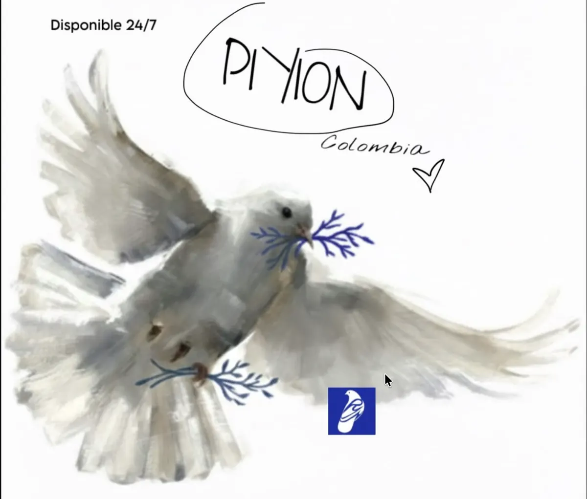
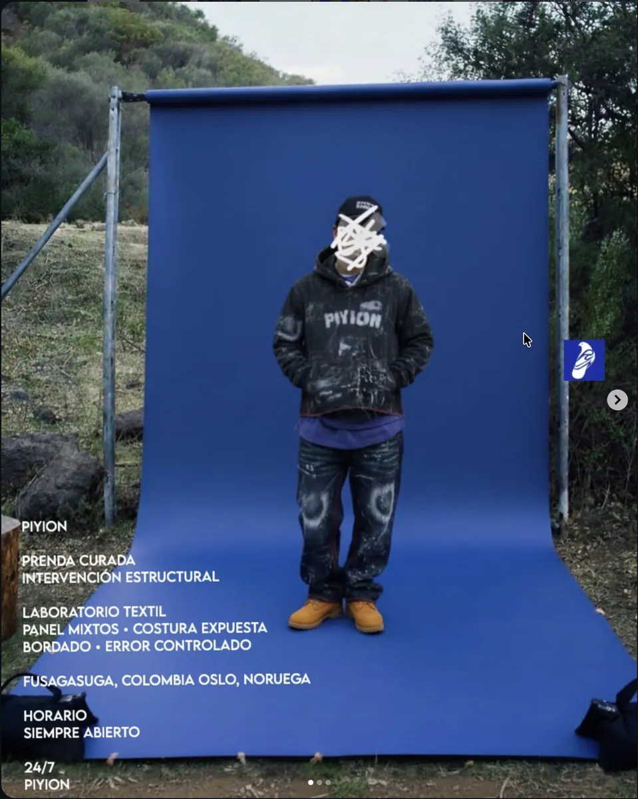
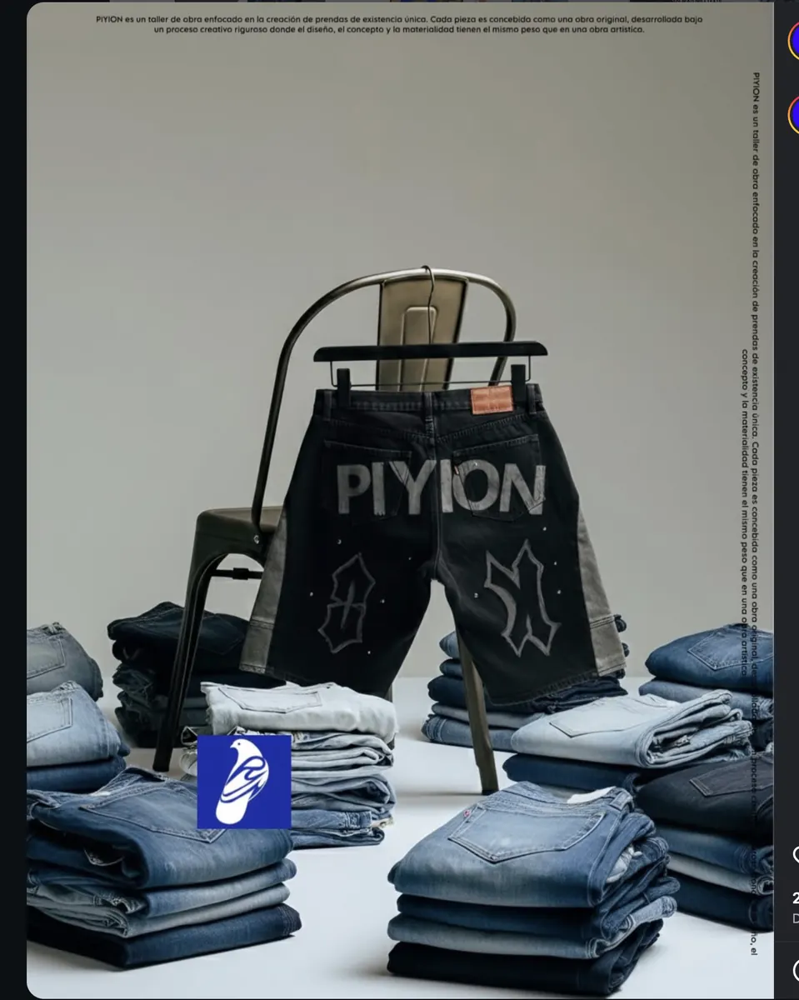
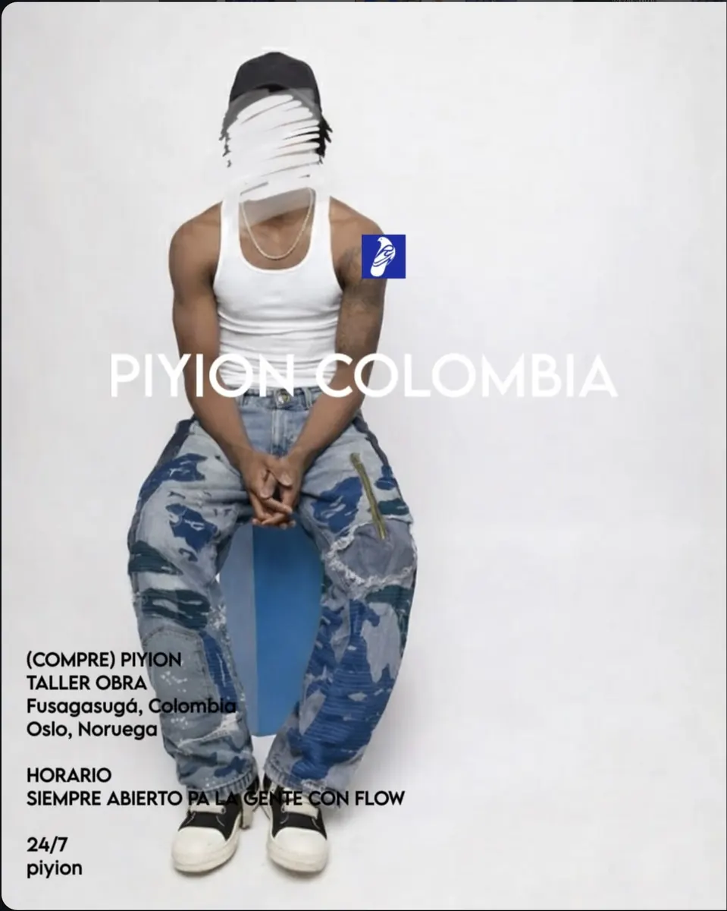
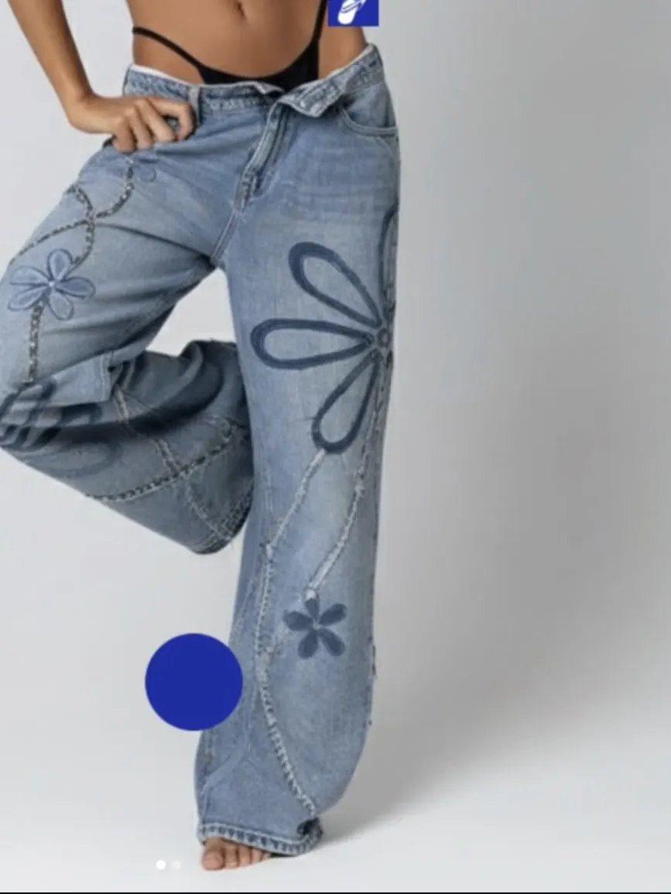
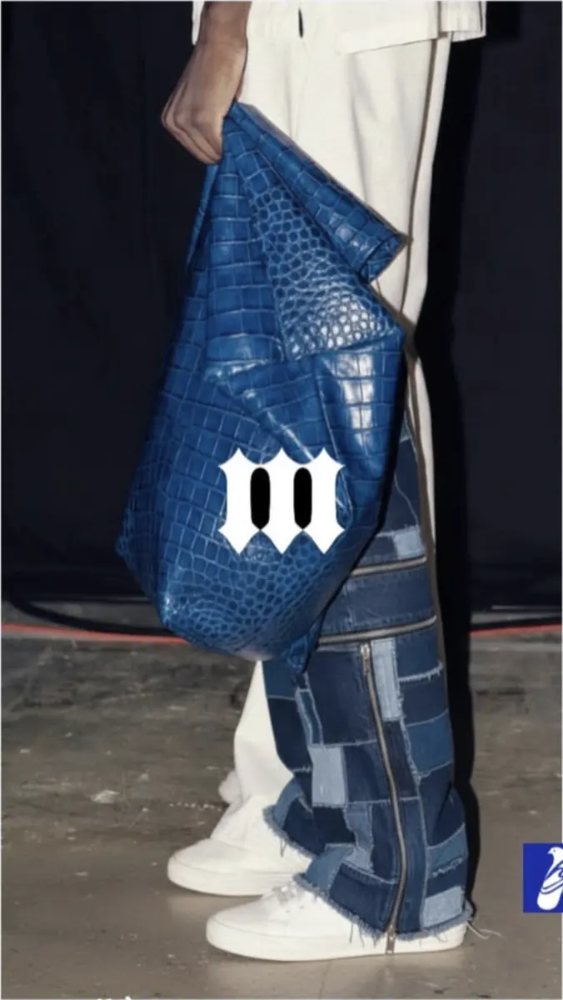
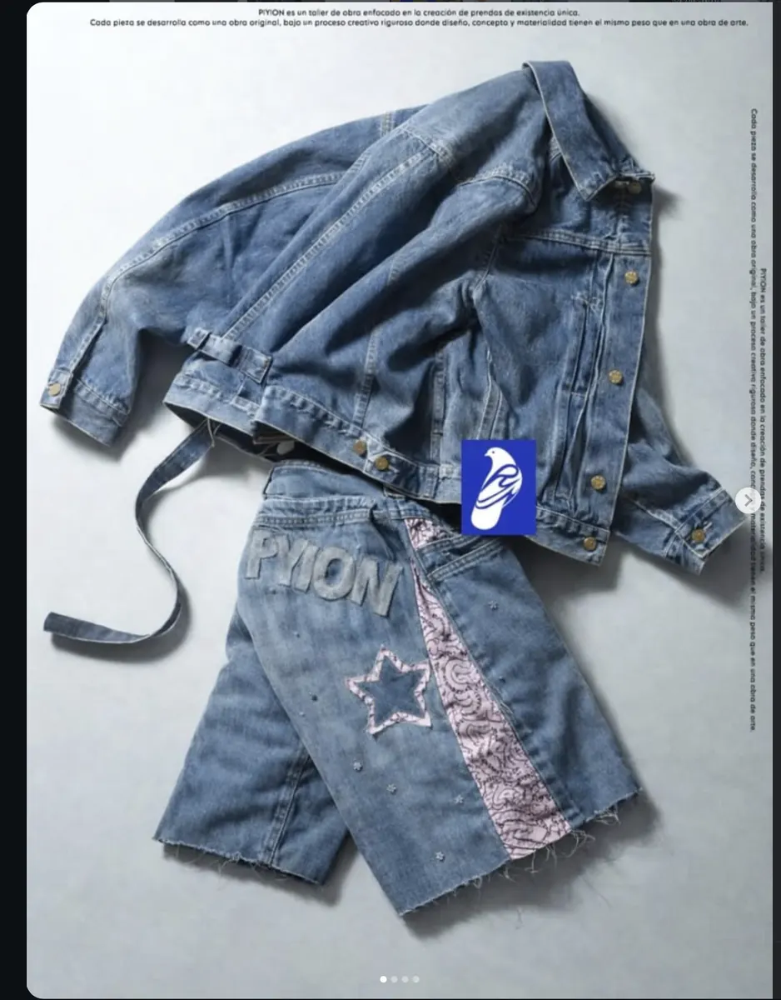
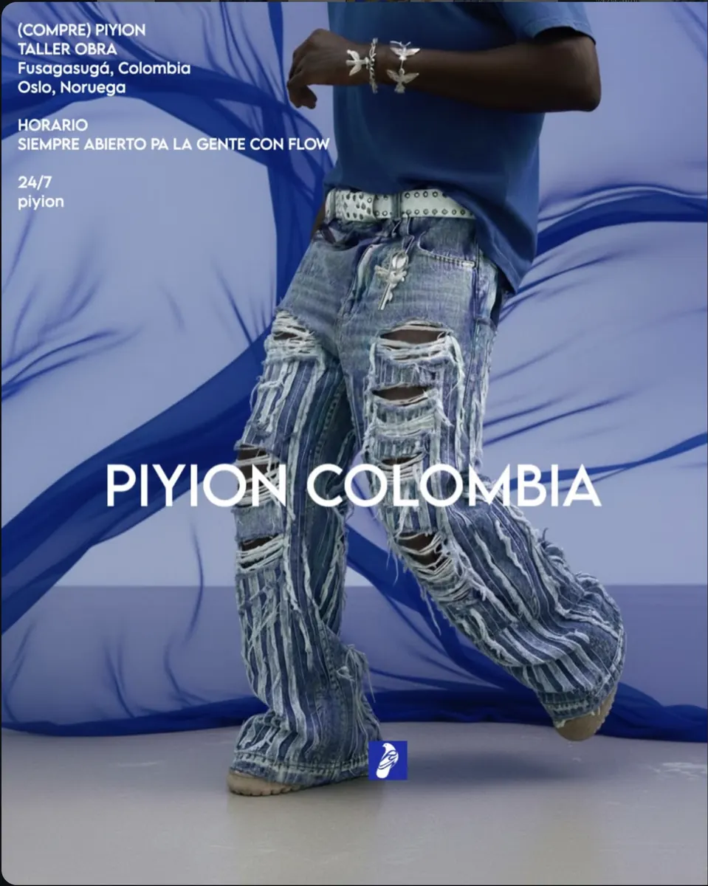
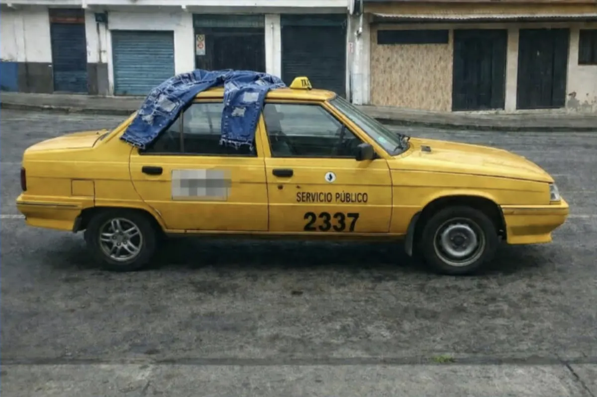

Cada prenda es una obra de existencia única.
PIYION es un taller de obra enfocado en la creación de prendas de existencia única. Cada pieza se desarrolla como una obra original, bajo un proceso creativo riguroso donde el diseño, el concepto y la materialidad tienen el mismo peso que en una obra de arte.
No hay tallas en bodega ni temporadas. Hay denim recuperado, manos, tiempo y una sola versión de cada cosa. Por eso todo se hace bajo pedido.
Obra
Denim intervenido a mano. Cada pieza existe una sola vez.

Prenda curada. Intervención estructural y costura expuesta.

Letras aplicadas sobre denim negro, panel lateral gris.

Panel mixtos, parches y cremallera a la vista.

Denim para mujer. Aplicaciones cosidas a mano y pedrería artesanal.

Laboratorio textil. Cuero grabado y jean de retazos.

Chaqueta y short con estrella aplicada y panel de paisley.

Error controlado. Textura viva.
¿Viste una que te llamó?
Pide una pieza similar Similar, nunca idéntica.Laboratorio textil
No producimos colecciones. Curamos prendas, una por una, hasta que se vuelven obra.
- Panel mixtos
Telas y lavados distintos cosidos en una sola prenda.
- Costura expuesta
La costura no se esconde: se deja a la vista como dibujo.
- Bordado y aplicaciones
Estrellas, letras y flores cosidas a mano.
- Error controlado
Roturas, deshilados y desgaste, puestos donde tienen que ir.
- Pedrería artesanal
Piedra por piedra, sobre el recorrido de la costura.
- Intervención estructural
La prenda se desarma y se vuelve a armar distinta.
Proceso
Lento a propósito. Cada prenda pasa por las manos del taller las veces que haga falta.
Materialidad
Denim recuperado y curado. La tela trae su historia y el taller le suma otra.
Piezas
Una de una. Se aceptan pedidos de prendas similares, nunca idénticas.

Prendas únicamente bajo pedido
Pide tu pieza
Escribe al taller con tu idea o con la prenda que quieres intervenir. El proceso es lento y el resultado existe una sola vez.
en las dos